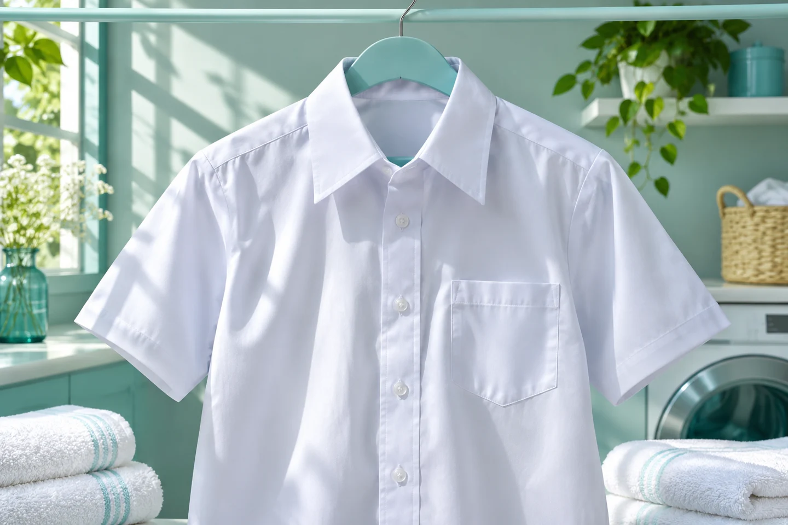

El proyecto
Conoce el prototipo y su proceso de pruebas.
Conoce PreClean →CUIDADO DE UNIFORMES
Consejos para cuidar tus uniformes escolares y laborales. Conoce PreClean, nuestro prototipo en dos pasos en polvo para tratar manchas difíciles.

PRECLEAN
Conoce el prototipo y su proceso de pruebas.
Conoce PreClean →Consulta consejos y videos para uniformes escolares y laborales.
Ver consejos →Lee testimonios y comparte tu experiencia con el equipo.
Ver testimonios →